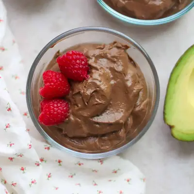

Chocolate Avocado Pudding

Ingredients
- 2 small ripe avocados
- 1/4 cup (25g) unsweetened cocoa powder
- 1/2 cup (120g) plain yogurt (regular or Greek-style)
- 4-5 dates, soaked and pitted
- 1 teaspoon pure vanilla extract
Steps
- Soak dates in warm water for at least 30 minutes. Drain and be sure to remove the pits.
- Add all the ingredients into a food processor or blender and blend until smooth, scraping down the sides as needed.
- Taste and add more cocoa powder or dates (or other sweeteners like maple syrup or honey) as desired. Enjoy cold with toppings of choice, if desired.
Recipe by Min Kwon · Kidfriendly Meals, from MJ and Hungryman. Saved here for personal use; the original has the full notes, tips and photos. Open original